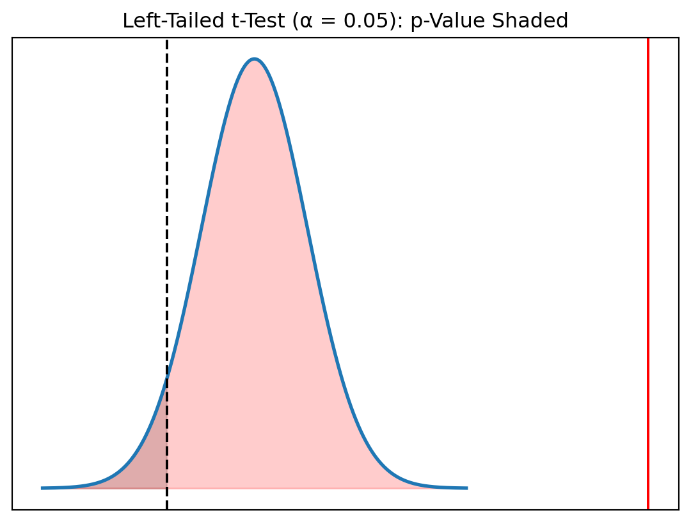
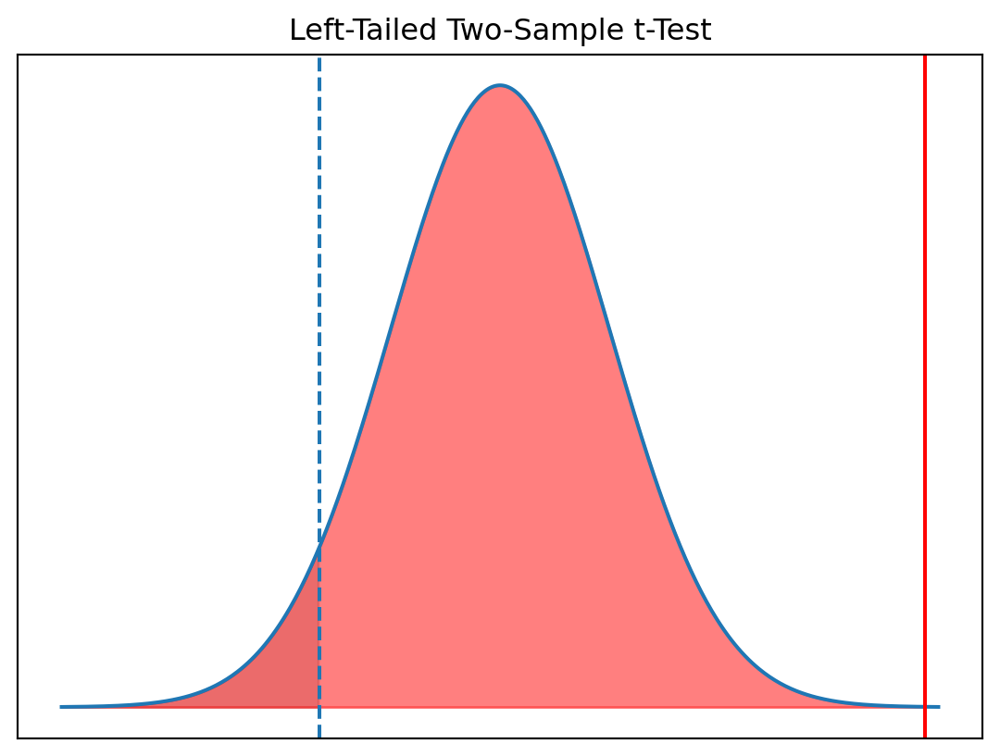

Statistics Session 06: Inferential Statistics
Hypothesis Testing
statistics
Hypothesis Testing
In the statistical world, a hypothesis is an assumption about a specific population parameter, such as a mean, a proportion, or a standard deviation.
We Data Analyists/Statisticians like to make an assumptions about the value of a population parameter, and then:
- collect a sample from that population,
- measure the sample,
- declare in ascholarly manner, whether the sample supports the original assumption.
This, in a nutshell, is what hypothesis testing is all about.
Stating The Hypothesis
A recent Wall Street Journal article titled “Does the Internet Make You Smarter or Dumber?” posed the possibility that online activities turn us into shallow thinkers. The article cited a statistic claiming that the average time an American spends looking at a Web page is 56 seconds. A researcher at a local university would like to test this claim using a hypothesis test.
Null Hypothesis
The null hypothesis denoted by \(H_0\), represents the status quo and involves stating the belief that the population parameter is \(\le,=, \ge\) a specific value. The null hypothesis is believed to be true unless there is overwhelming evidence to the contrary.
Alternative hypothesis
The alternative hypothesis, denoted by \(H_1\), represents the opposite of the null hypothesis and is believed to be true if the null hypothesis is found to be false. The alternative hypothesis always states that the population parameter is \(\gt,\ne, \lt\) a specific value.
You need to be careful how you state the null and alternative hypotheses. Your decision will depend on the nature of the test and the motivation of the person conducting it. Suppose the purpose of the test is to determine if the population mean is equal to a specific value, which is what we would want to test based on our previous Wall Street Journal article
ImportantAnalogy with the Legal System
We can never accept the Null Hypothesis!
In order to completely understand the process consider the analogy with the legal system.
We can either reject it or not reject it (fail to reject it)
The court system assumes a person is innocent until proben guily, the hypothesis test is formulated as follows
- \(H_0:\) the defendant is innocent (status quo)
- \(H_1:\) the defendant is guilty
The court system might have two conclusions:
- Reject the Null Hypothesis \(\rightarrow\) the defendant is guilty
- Fail to reject the Null Hypothesis \(\rightarrow\) the defendant is guilty
Steps In hypothesis testing
- Identify the null and alternative hypotheses
- Set a value for the significance level \(\alpha\)
- Determine the appropriate critical value
- Calculate the appropriate test statistic
- Compare the test statistics with the critical score
- State your conclusion
Identifying the Null Hypothesis
You need to be careful how you state the null and alternative hypotheses. Your decision will depend on the nature of the test and the motivation of the person conducting it. Suppose the purpose of the test is to determine if the population mean is equal to a specific value, which is what we would want to test based on our previous Wall Street Journal article. We would then assign this statement as the null hypothesis, which results in the following equation:
In this example the Internet users spend an average time of 56 seconds on a Web page. Thus the status quo would be:
\[ H_0: \mu = 56 \text{ seconds (status quo)} \]
\[ H_1: \mu \ne 56 \text{ seconds} \]
All the Combinations
| Two-Tailed Test | Left-Tailed Test | Right-Tailed Test | |
|---|---|---|---|
| Null | \[H_0: \mu = 56\] | \[H_0: \mu \ge 56\] | \[H_0: \mu \le 56\] |
| Alternative | \[H_1: \mu \ne 56\] | \[H_1: \mu < 56\] | \[H_1: \mu > 56\] |
Set Significance Level
The level of significance represents the probability of making a Type I error. A Type I error occurs when we reject the null hypothesis but it is actually true. In the scope of the program we will set \(\alpha = 0.05\) which is a common value used in hypothesis testing.
In the scope the above example
Type I Errorwe conclude that the true average time spent on a webpage is not 56 seconds, even though in reality it is 56 seconds.
| Alpha (α) | Tail | Critical z-Score | Critical t-Score (df = 20) |
|---|---|---|---|
| 0.01 | One | 2.33 | 2.528 |
| 0.01 | Two | 2.575 | 2.845 |
| 0.02 | One | 2.05 | 2.312 |
| 0.02 | Two | 2.33 | 2.528 |
| 0.05 | One | 1.645 | 1.725 |
| 0.05 | Two | 1.96 | 2.086 |
| 0.10 | One | 1.28 | 1.325 |
| 0.10 | Two | 1.645 | 1.725 |
In practical terms:
- The researcher conducts a sample study.
- The sample mean differs enough from 56 seconds to fall outside the acceptance region.
- The test rejects the null hypothesis at the
5%level. - But in truth, Americans do spend exactly
56seconds on average.

Determining Critical Values and the Test Statistics
NoteIn case of z-test
When Variance is known
- test statistic would be \(z_{\bar{x}}\)
- critical value would be \(z_{\alpha}\)
\[ z_{\bar{x}} = \frac{\bar{x} - \mu_{H_0}}{\sigma / \sqrt{n}} \]
Given
- Claimed mean: \(\mu_{H_0} = 56\) seconds
- Sample mean: \(\bar{x} = 62\) seconds
- Population standard deviation (historical estimate): \(\sigma = 18\) seconds
- Sample size: \(n = 45\)
\[ z_{\bar{x}} = \frac{\bar{x} - \mu_{H_0}}{\sigma / \sqrt{n}} = \frac{62 - 56}{18 / \sqrt{45}} = \frac{6}{2.683} = 2.24 \]
A test statistic of 2.24 lies well into the rejection region (far from 0).
- For a two-tailed test at \(\alpha = 0.05\), the critical values are \(\pm 1.96\).
- Since 2.24 > 1.96, we reject \(H_0\).
Interpretation:
There is statistically significant evidence that the true average time spent on a webpage is different from 56 seconds.
NoteIn case of t-test
When Variance is Unknown
- test statistic would be \(t_{\bar{x}}\)
- critical value would be \(t_{\alpha}\) (from the t-table)
\[ t_{\bar{x}} = \frac{\bar{x} - \mu_{H_0}}{s / \sqrt{n}} \]
Given
- Claimed mean: \(\mu_{H_0} = 56\) seconds
- Sample mean: \(\bar{x} = 62\) seconds
- Sample standard deviation: \(s = 20\) seconds
- Sample size: \(n = 30\)
- Degrees of freedom: \(df = n - 1 = 29\)
Test Statistic
\[ t_{\bar{x}} = \frac{62 - 56}{20 / \sqrt{30}} = \frac{6}{3.651} = 1.64 \]
Critical Value
For a two-tailed test at \(\alpha = 0.05\) with \(df = 29\):
\[f t_{\alpha/2, \, df} = t_{0.025,29} = 2.045 \]
Decision
Since 1.64 < 2.045, we fail to reject \(H_0\). There is not enough statistical evidence to conclude that the true average time spent on a webpage is different from 56 seconds. The sample mean is slightly higher, but not far enough from 56 to be statistically significant given the sample size and sample variability.
In the scope of this program we are going to conduct two hypothesis testing
- Hypothesis Testing for a Single Population
- Hypothesis Testing for two Samples (A/b testing)
Graphical Representation
Decision Rules
Z Value
| Test Type | Hypotheses | Condition | Conclusion |
|---|---|---|---|
| Two-tail | \(H_0: \mu = \mu_0\) | \(\lvert z_x \rvert > z_{\alpha/2}\) | Reject \(H_0\) |
| \(H_1: \mu \ne \mu_0\) | \(\lvert z_x \rvert \le z_{\alpha/2}\) | Do not reject \(H_0\) | |
| One-tail | \(H_0: \mu \le \mu_0\) | \(z_x > z_\alpha\) | Reject \(H_0\) |
| \(H_1: \mu > \mu_0\) | \(z_x \le z_\alpha\) | Do not reject \(H_0\) | |
| One-tail | \(H_0: \mu \ge \mu_0\) | \(z_x < -z_\alpha\) | Reject \(H_0\) |
| \(H_1: \mu < \mu_0\) | \(z_x \ge -z_\alpha\) | Do not reject \(H_0\) |
P Value
| Test Type | Hypotheses | Condition | Conclusion |
|---|---|---|---|
| Two-tail | \(H_0: \mu = \mu_0\) | \(\lvert t_{\bar{x}} \rvert > t_{\alpha/2,\;df}\) | Reject \(H_0\) |
| \(H_1: \mu \ne \mu_0\) | \(\lvert t_{\bar{x}} \rvert \le t_{\alpha/2,\;df}\) | Do not reject \(H_0\) | |
| Right-tail | \(H_0: \mu \le \mu_0\) | \(t_{\bar{x}} > t_{\alpha,\;df}\) | Reject \(H_0\) |
| \(H_1: \mu > \mu_0\) | \(t_{\bar{x}} \le t_{\alpha,\;df}\) | Do not reject \(H_0\) | |
| Left-tail | \(H_0: \mu \ge \mu_0\) | \(t_{\bar{x}} < -t_{\alpha,\;df}\) | Reject \(H_0\) |
| \(H_1: \mu < \mu_0\) | \(t_{\bar{x}} \ge -t_{\alpha,\;df}\) | Do not reject \(H_0\) |
P Value
It is more convenient to use p-value apporach, as it helps us to rememeber the decission rule easily.
If the p-value is less than \(\alpha\), there is little chance of observing the sample mean from the population on which it is based if the null hypothesis were actually true. We therefore reject the null hypothesis under this condition.
| Condition | Conclusion |
|---|---|
| \(p\text{-value} \ge \alpha\) | Do not reject \(H_0\) |
| \(p\text{-value} < \alpha\) | Reject \(H_0\) |
Visual Representation

Type II Error
We can also be guilty of Type II error, which occurs when the null hypothesis is really false and we fail to reject it. The probability of a Type II error is known as \(\beta\).
When we decide to reject the null hypothesis, there is always the chance, with probability equal to \(\alpha\), that we are wrong!
In the Nissan Leaf example, a is the probability of concluding that the average driving distance does exceed 100 miles when, in fact, it does not exceed 100 miles.
Case Study
TipUrban Traffic Analytics: Average Speed in Yerevan
Urban mobility reports often claim that the average weekday driving speed in Yerevan is 15 km/h. A transportation analyst wants to test this claim using recent GPS data from ride-sharing vehicles.
This example is ideal for explaining all three hypothesis-test formulations:
- Two-Tailed: Is the true average speed different from
15 km/h? - Right-Tailed: Are drivers going faster than
15 km/h? - Left-Tailed: Are drivers going slower than
15 km/h?
Two-Tailed Test: Is the true average speed different from 15 km/h?
We want to test whether the true average weekday driving speed in Yerevan differs from the commonly stated value of 15 km/h.
Hypotheses
\[H_0: \mu = 15\]
\[H_1: \mu \ne 15\]
Since the population standard deviation is unknown, a one-sample t-test is appropriate.
Given
- Sample size: \(n = 1000\)
- Sample mean: \(\bar{x} = 16.2 \text{ km/h}\)
- Sample standard deviation: \(s = 5.1 \text{ km/h}\)
- Null hypothesis mean: \(\mu_{H_0} = 15\)
- Significance level: \(\alpha = 0.05\)
- Degrees of freedom: \(df = 999\)
The test statistic is:
\[ t_{\bar{x}} = \frac{\bar{x} - \mu_{H_0}}{s/\sqrt{n}} \]

Interpretation of the Two-Tailed Test
- The computed test statistic is: \(t_{\bar{x}} = 7.44\)
- For a two-tailed test with \(\alpha = 0.05\) and \(df = 999\) \(\rightarrow\) \(t_{\alpha/2, df} = \pm 1.96\) :
- p-value: \(p = 2 \cdot P(T > 7.44)\approx 1 \times 10^{-10}\)
Decision
\(|7.44| > 1.96 \rightarrow\) \(p < 0.05\)
We reject the null hypothesis. There is very strong evidence that the true average weekday driving speed in Yerevan is not equal to 15 km/h.
Right-Tailed Test: Are drivers going faster than 15 km/h?
We want to test whether the true average weekday driving speed in Yerevan is greater than
the stated value of 15 km/h.
Hypotheses
\[H_0: \mu \le 15\]
\[H_1: \mu > 15\]
Given
- Sample size: \(n = 1000\)
- Sample mean: \(\bar{x} = 16.2\) km/h
- Sample standard deviation: \(s = 5.1\) km/h
- Null hypothesis mean: \(\mu_{H_0}=15\)
- Significance level: \(\alpha=0.05\)
- Degrees of freedom: \(df = 999\)
The test statistic is:
\[ t_{\bar{x}} = \frac{\bar{x} - \mu_{H_0}}{s/\sqrt{n}} \]

Interpretation of the Right-Tailed Test
- Test statistic: \(t_{\bar{x}} = 7.44\)
- Critical value: \(t_{\alpha, 999} = 1.645\)
- p-value: \(p \approx 5\times 10^{-11}\)
Decision
Since \(7.44 > 1.645\) and \(p < 0.05\), we reject \(H_0\).
Conclusion:
There is extremely strong evidence that drivers in Yerevan drive faster than 15 km/h on average.
Left-Tailed Test: Are drivers slower than 15 km/h?
We want to test whether the true average weekday driving speed in Yerevan is less than
the stated value of 15 km/h.
Hypotheses
\[H_0: \mu \ge 15\]
\[H_1: \mu < 15\]
Given
- Sample size: \(n = 1000\)
- Sample mean: \(\bar{x} = 16.2\) km/h
- Sample standard deviation: \(s = 5.1\) km/h
- Null hypothesis mean: \(\mu_{H_0} = 15\)
- Significance level: \(\alpha = 0.05\)
- Degrees of freedom: \(df = 999\)
The test statistic is:
\[ t_{\bar{x}} = \frac{\bar{x} - \mu_{H_0}}{s/\sqrt{n}} \]

Interpretation of the Left-Tailed Test
- Test statistic: \(t_{\bar{x}} = 7.44\)
- Critical value: \(t_{\alpha, 999} = -1.645\)
- p-value: \(p = P(T < 7.44) \approx 1.00\)
Decision:
Since \(7.44\) is not less than \(-1.645\) and \(p > 0.05\), we do NOT reject \(H_0\).
Conclusion:
There is no evidence that drivers in Yerevan are slower than 15 km/h. In fact, the sample strongly indicates the opposite.
Comparing Two Population Means
The sampling distribution for the difference in means is the result of subtracting the sampling distribution for the mean of one population from the sampling distribution for the mean of a second population.

Two-Sample t-Test (A/B Test)
Does Variant B change average daily engagement?
A telecom company is testing two versions of its mobile self-care app:
- Version A (control) — current user interface
- Version B (treatment) — redesigned dashboard
The team wants to know whether average daily user engagement (minutes/day) differs between the two versions.
Hypotheses
\[H_0: \mu_A = \mu_B\]
\[H_1: \mu_A \ne \mu_B\]
Since population SD is unknown for both groups, we use a two-sample Welch t-test.
Given
- Version A: \(n_A = 800\), \(\bar{x}_A = 12.5\), \(s_A = 6.2\)
- Version B: \(n_B = 850\), \(\bar{x}_B = 13.4\), \(s_B = 6.8\)
Test Statistic
\[ t = \frac{\bar{x}_A - \bar{x}_B}{\sqrt{\frac{s_A^2}{n_A} + \frac{s_B^2}{n_B}}} \]
Degrees of freedom use the Welch approximation.

Interpretation
- Test statistic: \(t = -2.93\)
- Critical values: \(t_{\alpha/2, df} \approx \pm 1.96\)
- p-value: \(p = 0.0034\)
Decision
Because \(|t| > 1.96\) and \(p < 0.05\), we reject \(H_0\).
Conclusion
Version B produces a statistically significant difference in average daily engagement compared to Version A.
Two Sample t-Test | Right-Tailed Test
Does Variant B increase engagement?
Now the team wants a directional test:
Does Version B strictly increase user engagement?
Hypotheses
\[H_0: \mu_B \le \mu_A\]
\[H_1: \mu_B > \mu_A\]
Given
Same data as Example 1:
- \(n_A = 800\), \(\bar{x}_A = 12.5\), \(s_A = 6.2\)
- \(n_B = 850\), \(\bar{x}_B = 13.4\), \(s_B = 6.8\)
Test Statistic
\[ t = \frac{\bar{x}_A - \bar{x}_B}{\sqrt{\frac{s_A^2}{n_A} + \frac{s_B^2}{n_B}}} \]

Interpretation (Right-Tailed Test)
- Test statistic: \(t = -2.93\)
- Critical value: \(t_{0.95, df} = 1.645\)
- p-value: \(p = 0.998\)
Decision
We fail to reject \(H_0\).
Conclusion
There is no evidence that Version B increases user engagement.
Two Sample t-Test | Left-Tailed Test
Does Variant B reduce app load time?
Load time is a negative metric: smaller = better.
Hypotheses
\[H_0: \mu_B \ge \mu_A\]
\[H_1: \mu_B < \mu_A\]
Given
- Version A: \(\bar{x}_A = 3.2\) sec, \(s_A = 1.4\), \(n_A = 600\)
- Version B: \(\bar{x}_B = 2.9\) sec, \(s_B = 1.3\), \(n_B = 620\)
Test Statistic
\[ t = \frac{\bar{x}_A - \bar{x}_B}{\sqrt{s_A^2/n_A + sB^2/n_B}} \]

Interpretation (Left-Tailed Test)
- Test statistic: \(t = -4.37\)
- Critical value: \(t_{0.05, df} = -1.645\)
- p-value: \(p \approx 0.0000\)
Decision
We reject \(H_0\).
Conclusion
There is strong evidence that Version B reduces app load time.
Combined Summary Table
| Test Type | Scenario | Hypotheses | Test Statistic | Critical Value(s) | p-Value | Decision | Interpretation |
|---|---|---|---|---|---|---|---|
| Two-Tailed | Difference between App A and App B | \(H_0:\mu_A=\mu_B\) \(H_1:\mu_A\ne\mu_B\) |
\(t=-2.93\) | \(\pm 1.96\) | \(p=0.003\) | Reject | Engagement is significantly different between A and B. |
| Right-Tailed | Does B increase engagement vs A? | \(H_0:\mu_B\le\mu_A\) \(H_1:\mu_B>\mu_A\) |
\(t=-2.93\) | \(t_{0.95}=1.645\) | \(p=0.99\) | Fail to reject | No evidence that Version B increases engagement. |
| Left-Tailed | Does B reduce app load time vs A? | \(H_0:\mu_B\ge\mu_A\) \(H_1:\mu_B<\mu_A\) |
\(t=-4.37\) | \(t_{0.05}=-1.645\) | \(p\approx 0.0000\) | Reject | Version B significantly reduces app load time. |